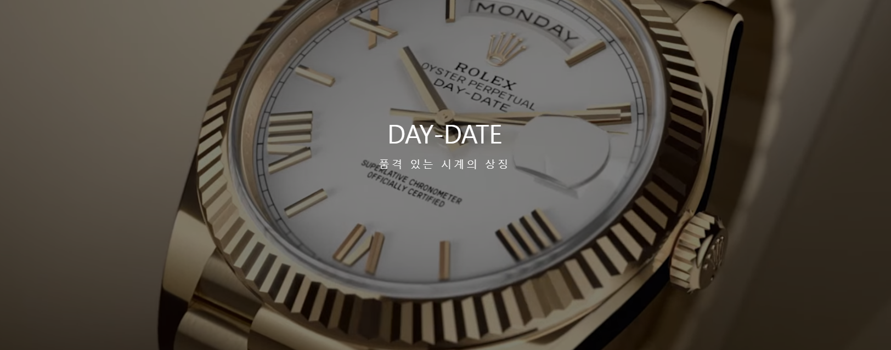
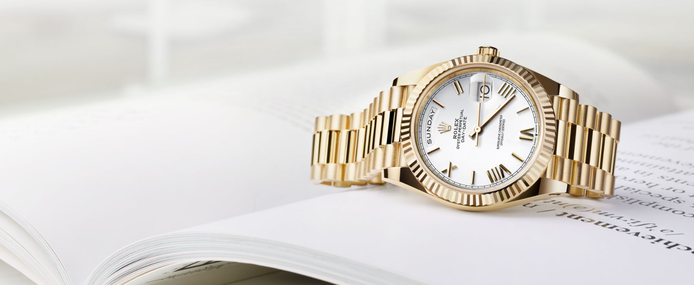
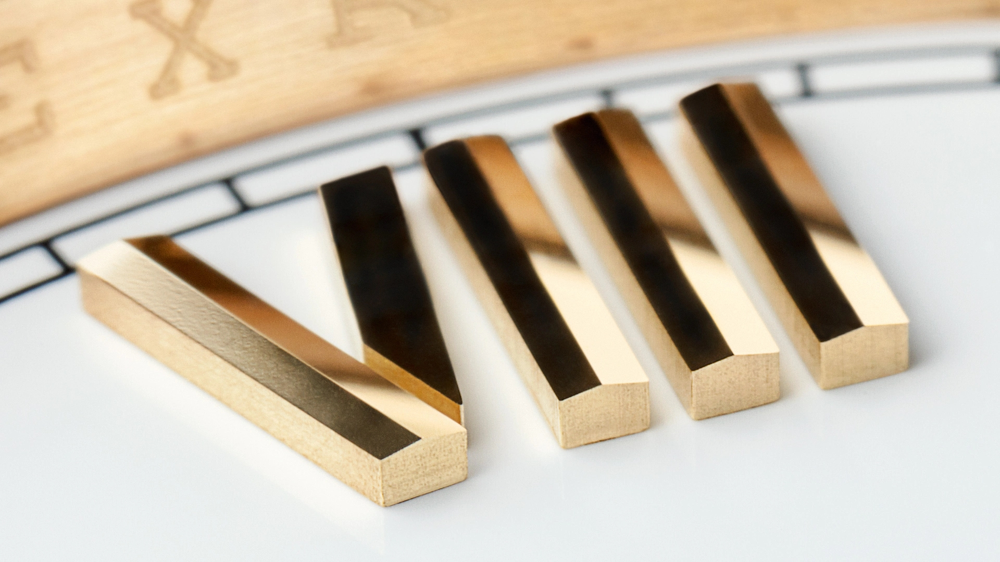
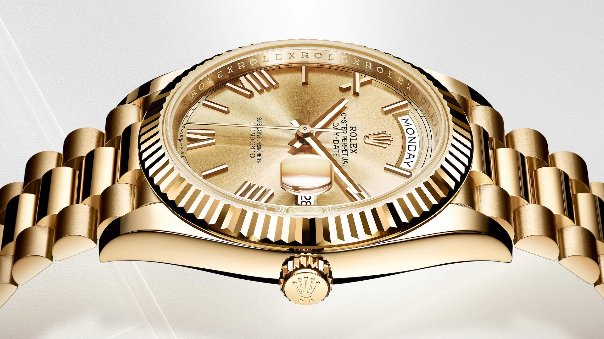
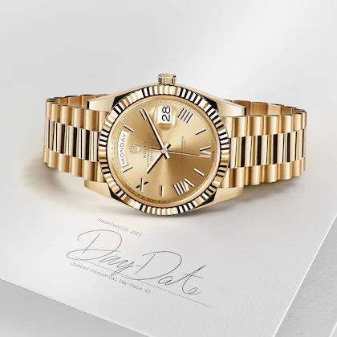
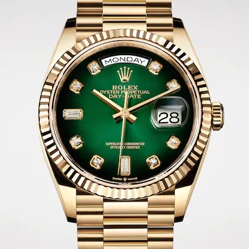
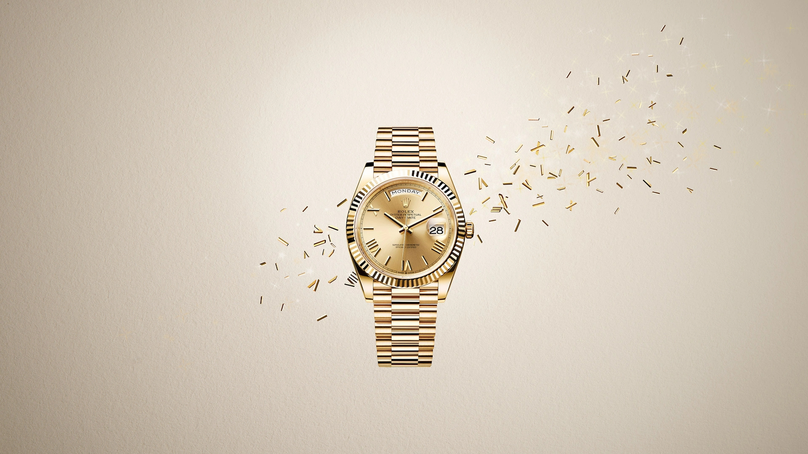

1956년, 탄생한 데이-데이트(Day-Date)는 다이얼에 날짜뿐만 아니라 약자가 아닌 전체 단어로 표시된 요일이 순간적으로 바뀌는 현대적인 캘린더 기능을 장착한 최초의 방수 오토매틱 크로노미터 손목시계입니다.
탁월한 정밀함과 신뢰성, 가독성 그리고 독보적인 존재감을 자랑하는 이 품격 있는 모델은 가장 높은 명성을 자랑하는 시계로 자리 잡았습니다
상품 바로가기

다양한 전문 기술
여행을 자주 하는 이를 위한 우아한 시계, 스카이-드웰러는 두 개의 시간대를 동시에 표시하며,
연간 캘린더 기능을 갖추고 있습니다. 참조 시각은 24시간용 디스크를 통해 24시간 형식으로 표시되며, 현지 시각은 12시간용 일반 시침으로 읽을 수 있습니다.
사로스(Saros) 연간 캘린더는 30일과 31일이 있는 달을 자동으로 인식합니다.
특허를 받은 메커니즘으로 작동하는 사로스 시스템은 다이얼의 둘레에 있는 12개의 창에 현재 월이 빨간색으로 표시되는 혁신적인 디스플레이가 돋보입니다.
날짜 변경은 현지 시각에 따라 즉각적으로 이루어집니다


|  |
베젤은 플루티드 베젤, 스무스 베젤 또는 보석이 세팅된 베젤이 사용됩니다.
|
|
반원형 링크 3열로 구성된 메탈 소재의 프레지던트(President) 브레슬릿은 오이스터 퍼페츄얼 데이-데이트(Oyster Perpetual Day-Date)의 1956년 출시를 위해 특별히 제작되었습니다.
세련미와 편안함을 상징하는 프레지던트 브레슬릿은 롤렉스가 엄선한 최고급 메탈로 제작됩니다. 데이-데이트(Day-Date)는 세계 각국의 언어로 표시됩니다.
|
 |
